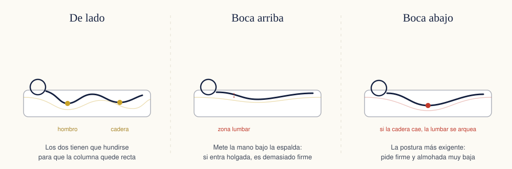

«¿Lo quiere duro o blando?» es la primera pregunta de cualquier tienda de colchones, y también la peor, porque da a entender que la firmeza es cuestión de gustos. No lo es. La firmeza correcta es la que mantiene tu columna alineada mientras duermes, y eso depende de dos datos objetivos: cuánto pesas y en qué postura duermes. El gusto viene después, y solo para afinar.
Firmeza no es dureza (ni hay una escala oficial)
Conviene separar dos cosas que se confunden todo el rato:
- Firmeza es cuánto se hunde el colchón bajo tu peso. La da sobre todo el núcleo.
- Acogida es la sensación de los primeros centímetros, lo que notas al tumbarte. La dan las capas de arriba.
Un colchón puede tener una acogida mullida y ser firme por debajo. De hecho, esa combinación es la que funciona para más gente: capas de arriba que dejan entrar hombro y cadera, y un núcleo que no se rinde.
El segundo aviso: no existe una escala de firmeza oficial. El «firme» de una marca puede ser el «medio» de otra. Cuando compares, no compares etiquetas: compara la densidad del núcleo, que sí es un número medible. En espumas HR, 28 kg/m³ o más aguanta; por debajo de 25 se deforma en pocos años.
La firmeza según tu peso
El peso es el factor que más manda, porque es literalmente la fuerza que hunde el colchón. Esta tabla es una orientación de partida, no una ley:
| Peso | Firmeza recomendada | Por qué |
|---|---|---|
| Menos de 60 kg | Media-baja o media | No hay peso suficiente para hundir un colchón firme, así que solo apoyas en hombros y caderas |
| 60 – 90 kg | Media | El rango donde la firmeza media alinea bien la columna en casi todas las posturas |
| 90 – 110 kg | Media-firme | Un colchón medio empieza a hundirse de más por el centro y la cadera cae |
| Más de 110 kg | Firme, con núcleo de alta densidad | Aquí la densidad del núcleo importa más que la etiqueta de firmeza |
Fíjate en la última fila: a partir de cierto peso, lo determinante deja de ser lo firme que se sienta y pasa a ser de qué está hecho el núcleo. Un colchón «firme» con espuma de 22 kg/m³ se hunde en un año largo.
 Firmeza media
Nuvora Aurea Viscoelástico
Firmeza media, la que encaja con más gente: 2 cm de viscoelástica sobre un núcleo HR de 28 kg/m³. Si necesitas más firme, está el de muelles.
Desde205,34 €
Ver precios y medidas →
Envío gratis30 noches de prueba5 años de garantía24 medidas
Firmeza media
Nuvora Aurea Viscoelástico
Firmeza media, la que encaja con más gente: 2 cm de viscoelástica sobre un núcleo HR de 28 kg/m³. Si necesitas más firme, está el de muelles.
Desde205,34 €
Ver precios y medidas →
Envío gratis30 noches de prueba5 años de garantía24 medidas

La firmeza según cómo duermes
De lado (la postura de la mayoría)
Dormido de lado, tu cuerpo apoya en dos salientes: el hombro y la cadera. Para que la columna quede recta, esos dos puntos tienen que hundirse y la cintura tiene que quedar sostenida. Con un colchón demasiado firme el hombro no entra, aguanta todo el peso y te despiertas con el brazo dormido o con molestias en la cadera.
Firmeza: media o media-baja, con una capa de acogida que se amolde. Es donde la viscoelástica luce.
Boca arriba
Aquí el peso se reparte mucho mejor, pero aparece otro riesgo: que la zona lumbar quede en el aire. Prueba a meter la mano bajo tu espalda estando tumbado. Si entra con holgura, el colchón es demasiado firme para ti; si te cuesta meterla, va bien.
Firmeza: media o media-firme.
Boca abajo
Es la postura más exigente con el colchón, porque el peso se concentra en el abdomen y, si el colchón cede ahí, la zona lumbar se arquea toda la noche. Necesitas firmeza para que la cadera no se hunda, y una almohada muy baja o directamente ninguna.
Firmeza: media-firme o firme.
Cambias de postura toda la noche
Es lo más habitual. En ese caso, la firmeza media es la apuesta sensata, porque es la única que se comporta razonablemente bien en las tres posturas.
Peso y postura juntos
Cuando los dos factores tiran en la misma dirección, la decisión es obvia. Cuando tiran en direcciones contrarias —por ejemplo, alguien de 100 kg que duerme de lado— manda el peso para el núcleo y manda la postura para la acogida: núcleo firme, capa superior mullida.
| Perfil | Qué buscar |
|---|---|
| Peso bajo + de lado | Firmeza media-baja con buena capa de acogida |
| Peso medio + cambia de postura | Firmeza media: la opción más segura |
| Peso alto + de lado | Núcleo firme de alta densidad, acogida mullida encima |
| Peso alto + boca abajo | Firme, y almohada muy baja |
| Persona calurosa, cualquier peso | Muelles ensacados: el aire circula entre ellos |
 Fabricado por nosotros
Nuvora Aurea Muelles Ensacados
Firmeza media-firme y núcleo de muelles ensacados uno a uno. Para quien pesa más, duerme caluroso o comparte cama con alguien que se mueve.
Desde244,67 €
Ver el Aurea de muelles →
Fabricado por nosotros
Nuvora Aurea Muelles Ensacados
Firmeza media-firme y núcleo de muelles ensacados uno a uno. Para quien pesa más, duerme caluroso o comparte cama con alguien que se mueve.
Desde244,67 €
Ver el Aurea de muelles →
Cuando dormís dos y pesáis distinto
Es el caso más difícil y el que peor resuelven las tiendas. Tres reglas que funcionan:
Diferencia de peso en la misma cama
- Hasta 20 kg de diferencia: elegid la firmeza del más pesado. El más ligero se adapta sin problema.
- Entre 20 y 40 kg: firmeza del más pesado, y muelles ensacados. Cada muelle responde solo donde recibe peso, así que el lado ligero no se ve arrastrado por el pesado.
- Más de 40 kg: dos colchones individuales sobre la misma base, cada uno con su firmeza. Es la única solución honesta; cualquier otra deja a uno de los dos durmiendo mal.
Y un detalle que se pasa por alto: cuanto más ancha sea la cama, menos os afectáis. En 135 cm, con 67,5 cm por cabeza, cualquier movimiento se nota. Lo tienes desarrollado en la guía de medidas de colchones.
Tres mitos que cuestan dinero
«Cuanto más duro, mejor para la espalda»
Viene de una época en la que la alternativa a un colchón duro era uno que se hundía por el centro. Hoy la evidencia apunta a la firmeza media como la que mejor funciona para la mayoría de personas con molestias lumbares. Un colchón muy duro no sostiene la columna: la deja recta a la fuerza, dejando huecos donde debería haber apoyo.
«En la tienda lo probé y estaba perfecto»
Cinco minutos tumbado, vestido, con luz y gente alrededor no se parece en nada a ocho horas de sueño. Además, el cuerpo tarda entre dos y cuatro semanas en adaptarse a una superficie nueva, así que las primeras noches en casa tampoco son concluyentes. Lo único que sirve es un periodo de prueba largo y con recogida gratuita.
«Si me duele la espalda, el colchón está mal»
A veces sí y a veces no. Una prueba casera: fíjate en si el dolor está al despertar y se va durante el día, y en si duermes mejor fuera de casa. Si las dos respuestas son que sí, el colchón está metido en el asunto. Si te duele igual en todas partes, hay algo más y conviene consultarlo.
Cómo saber que te has equivocado de firmeza
Pasadas las tres o cuatro primeras semanas —antes no cuenta— estas señales indican que la firmeza no es la tuya:
- Demasiado firme: hombro o cadera dormidos, necesidad de cambiar de postura constantemente, sensación de estar apoyado solo en dos puntos.
- Demasiado blando: molestias en la zona lumbar al levantarte, dificultad para darte la vuelta, sensación de tener que salir del colchón en vez de levantarte.
Si te reconoces en la primera lista, un topper mullido puede arreglarlo. Si te reconoces en la segunda, no hay parche: el núcleo no te sostiene y toca cambiar.
Preguntas frecuentes
¿Qué firmeza de colchón necesito según mi peso?
Como orientación: por debajo de 60 kg, firmeza media o media-baja, porque un colchón firme no llega a hundirse lo suficiente y crea puntos de presión en hombros y caderas. Entre 60 y 90 kg, firmeza media. Por encima de 90 kg, media-firme o firme, porque el peso hunde de más un colchón blando y la columna deja de estar alineada.
¿Es mejor un colchón duro para el dolor de espalda?
No necesariamente, y es una de las creencias que más dinero cuesta. Los estudios sobre dolor lumbar apuntan a la firmeza media como la que mejor resultado da en la mayoría de personas. Un colchón muy duro no deja entrar los hombros ni las caderas y obliga a la zona lumbar a quedarse en el aire. Si tienes dolor persistente, consúltalo con un profesional sanitario.
¿Qué firmeza es mejor si duermo de lado?
Media o media-baja. Durmiendo de lado, el hombro y la cadera son los dos puntos que soportan casi todo el peso, y necesitan hundirse para que la columna quede recta. Si el colchón no cede ahí, te despiertas con el brazo dormido o con molestias en la cadera.
¿Y si mi pareja y yo pesamos muy distinto?
Elegid la firmeza que corresponda al más pesado de los dos y compensad para el otro con una capa de acogida mullida. Un colchón de muelles ensacados ayuda bastante, porque cada muelle responde solo en su zona y no arrastra al lado contrario. Si la diferencia pasa de 40 kg, la solución real son dos colchones individuales juntos sobre una misma base.
¿La firmeza de un colchón cambia con el tiempo?
Sí. Todos los materiales se ablandan algo durante los primeros meses, y ese es un asentamiento normal. Lo que no es normal es que aparezca un hueco marcado con la forma del cuerpo: eso ya es una deformación del núcleo, y es lo que cubre la garantía cuando supera los 2,5 cm.
Prueba la firmeza en tu casa, no en una tienda
Cinco minutos tumbado en una tienda no dicen nada. Por eso tienes 30 noches para probarlo de verdad, y si no es lo tuyo lo recogemos gratis.
Ver colchones